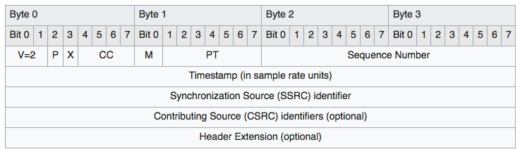

Nano Protocol
Nano (aka. Nano RDP / Codename: Arcadia) is the protocol Gamestreaming is based on. You can see strong similarities when looking at the Windows IoT RDP server implementation, NanoRDPServer.exe.
It's basically RTP over TCP (configuration / status of session) and UDP (data).
- Nano Protocol
- How it works
- TCP vs. UDP
- Data layout
- Padding
- RTP Header
- Channels
- Payload Types
- Streamer Protocol Version
- Channel Opening
- Streamer Handshaking
- Packets
- Streamer Payloads
- Reference Timestamp
- Timestamp of Data Packets
- Frame Id
- Audio
- Audio Format
- Audio Codec
- Audio Server Handshake
- Audio Client Handshake
- Audio Control
- Audio Data
- Video
- Lost frame reporting
- Video Format
- Video Codec
- Video Server Handshake
- Video Client Handshake
- Video Control
- Video Data
- Input
- Input Button Model
- Input Analog Model
- Input Extension Model
- Input Server Handshake
- Input Client Handshake
- Frame Ack
- Input Frame
- Control Protocol
- Control Header
- Control Payload Type
- Session Init
- Session Create
- Session Create Response
- Session Destroy
- Video Statistics
- Realtime Telemetry
- Change Video Quality
- Initiate Network Test
- Network Information
- Network Test Response
- Controller Event
How it works
- Client opens Broadcast Channel in SmartGlass Protocol and requests
start of gamestreaming to initialize and receive the connection-data
TCP Port,UDP PortandSession ID. - Client creates sockets for
TCPandUDP. - Client sends Control Handshake Packet with
own, randomly generated,
Connection Id. - Host responds with Control Handshake Packet and it's own Connection Id.
- Client starts a background loop, sending UDP Handshake packets.
- Host sends
Channel CreateandChannel Openpackets - Client replies with Channel Open packets for the appropriate channels
- Host sends Server Handshake packets for Video and Audio, announcing it's available formats
- Client replies with Client Handshake packets, choosing the desired format.
- Client sends Audio / Video Control packets, starting the stream.
- UDP Data comes flying in.
- Client stops UDP Handshake loop.
- ... Client processes data ...
TCP vs. UDP
Nano uses these two IP protocols in the following ways:
TCP
- Control Handshaking
- Creating/Opening/Closing Channels
- Streamer Client/Server Handshaking
- Streamer control messaging
- Control Protocol messaging
UDP
- UDP handshaking
- Streamer data packets
Data layout
The RTP header is in network / big-endian byteorder, the rest of the packet is usually in little-endian byteorder.
TCP Socket
All TCP packets have a nano-packet size prepended
(uint32, Little Endian), so several packets can be sent stacked.
Example of a single TCP packet with two nano packets inside:
packet size #1: 0x123
nano packet #1: byte[0x123]
packet size #2: 0x321
nano packet #2: byte[0x321]
Ideally the chunks are split directly when received from the socket and then forwarded to the unpacker/processor/parser.
Padding
Nano, different to SmartGlass core, uses padding of type ANSI X.923 aka. padding with zero, the last byte defining the number of padding bytes.
Aligment is 4 bytes.
Example
Plaintext (9 bytes)
DE AD BE EF DE AD BE EF DE
Padded Plaintext (12 bytes) - 3 bytes padding
DE AD BE EF DE AD BE EF DE 00 00 03
RTP Header

Image Source: https://de.wikipedia.org/wiki/Real-Time_Transport_Protocol
Image Copyright License: CC-by-sa-3.0
- Total size: 0x0C (12)
- V: Version (2 bits): Always 2
- P: Padding (1 bit): If set, last byte of payload is padding size.
- X: Extension (1 bit): If set, variable size header extension exists - Not used by Nano
- CSRC Count: (4 bits) Should be 0 - Not used by Nano
- M: Marker (1 bit): Indicates a special packet in stream data
- Payload type: (7 bits) See Payload Types
- Sequence number: (16 bits) Incrementing number, indvidual to each channel, used to keep track of order and lost packets
- Timestamp: (32 bits) Timestamp, unsure how it's actually calculated
- SSRC: (32 bits) For Nano its split into 2 x 16 bits:
NOTE: Only UDP packets use
Connection Idfield, TCP sets it to0
- Bits 0-15: Connection Id
- Bits 16-32: Channel Id
Channels
Nano communicates over the following channels + a core channel (0).
Core Channel handles:
The following listed channels only process messages of type Streamer.
Usage of
TcpBasehas not been spotted in the wild to date.
| Channel | Id |
|---|---|
| Video | Microsoft::Rdp::Dct::Channel::Class::Video |
| Audio | Microsoft::Rdp::Dct::Channel::Class::Audio |
| Chat Audio | Microsoft::Rdp::Dct::Channel::Class::ChatAudio |
| Control | Microsoft::Rdp::Dct::Channel::Class::Control |
| Input | Microsoft::Rdp::Dct::Channel::Class::Input |
| Input Feedback | Microsoft::Rdp::Dct::Channel::Class::Input Feedback |
| TCP Base | Microsoft::Rdp::Dct::Channel::Class::TcpBase |
Payload Types
Payload Type is encoded in the RTP Header Payload type field.
| Payload Type | Value |
|---|---|
| Streamer | 0x23 |
| Control | 0x60 |
| Channel Control | 0x61 |
| UDP Handshake | 0x64 |
- Streamer: Sending encoded video/audio/input data, sending Control Protocol packets
- Control: Initial TCP handshake, informs each participants about the used Connection Id.
- Channel Control: Creating / opening / closing Channels.
- UDP Handshake: Initial UDP handshake, used to inform the host about the used UDP port of the client side.
Streamer Protocol Version
Currently these are the used streamer protocol version:
- Video: Version 5
- Audio: Version 4
- Input: Version 3
Channel Opening
By default, console creates and opens Channels for:
- Audio
- Video
- ChatAudio
- Control
Client needs to respond with a Channel Open packet. After that, handshaking needs to be done, see Streamer Handshaking
NOTE:
InputandInput Feedbackare somewhat special, see Input
Streamer Handshaking
Normally, a Server Handshake is sent by the console, client has to
respond with a Client Handshake.
NOTE: Input Feedback and Chat Audio are special!
Packets
Packet Layout
├── RtpHeader
└── Payload (RtpHeader.PayloadType)
├── Control Handshake
├── Channel Control
│ ├── Channel Create
│ ├── Channel Open
│ └── Channel Close
├── UDP Handshake
└── Streamer
├── TCP Header
├── UDP Header
├── Audio Payload
│ ├── Server Handshake
│ ├── Client Handshake
│ ├── Control
│ └── Data
├── Video Payload
│ ├── Server Handshake
│ ├── Client Handshake
│ ├── Control
│ └── Data
├── Input Payload
│ ├── Server Handshake
│ ├── Client Handshake
│ ├── Frame Ack
│ └── Frame
└── Control Payload
└── Control Header
├── Session Init
├── Session Create
├── Session Create Response
├── Session Destroy
├── Video Statistics
├── Realtime Telemetry
├── Change Video Quality
├── Initiate Network Test
├── Network Information
├── Network Test Response
└── Controller Event
Control Handshake Packet
| Offset (hex) | Offset (dec) | Type | Description |
|---|---|---|---|
| 0x00 | 0 | byte | Type |
| 0x01 | 1 | uint16 | Connection Id |
Total size: 0x03 (3)
- Type: Handshake type: SYN: 0 - Sent by client, ACK: 1 - Response from console
- Connection Id: Client sends randomly generated connection Id, Host responds with it's own.
Channel Control Packet
Channel Control Header
| Offset (hex) | Offset (dec) | Type | Description |
|---|---|---|---|
| 0x00 | 0 | uint32 | Channel Control Type |
| 0x04 | 4 | byte[] | Payload |
Total size: variable
- Channel Control Type: See Channel Control Types
- Payload: Depending on Type-field
Channel Control Types
| Channel Control | Value |
|---|---|
| Create | 0x02 |
| Open | 0x03 |
| Close | 0x04 |
Channel Control Payloads
Create
Channel Control Type: 0x02
| Offset (hex) | Offset (dec) | Type | Description |
|---|---|---|---|
| 0x00 | 0 | uint16 | Name length |
| 0x02 | 2 | uchar[len] | Channel Name |
| 0x02 + len | 2 + len | uint32 | Flags |
Total size: variable
- Channel Name: See Channels
- Flags: Unknown
Open
Channel Control Type: 0x03
| Offset (hex) | Offset (dec) | Type | Description |
|---|---|---|---|
| 0x00 | 0 | uint32 | Flags length |
| 0x04 | 4 | byte[len] | Flags |
Total size: variable
- Flags (optional): Depending on prepended size. Are sent by the client as-is in the responding Channel Open packet.
Close
Channel Control Type: 0x04
| Offset (hex) | Offset (dec) | Type | Description |
|---|---|---|---|
| 0x00 | 0 | uint32 | Flags |
Total size: 0x04 (4)
- Flags: Same flags as sent with
CreateandOpenpacket
UDP Handshake Packet
| Offset (hex) | Offset (dec) | Type | Description |
|---|---|---|---|
| 0x00 | 0 | byte | Type |
Total size: 0x01 (1)
- Type: Handshake Type
Streamer Packet
Streamer Flags
| Flag | Value |
|---|---|
| Got Seq/Prev Seq | 0x01 |
| Unknown | 0x02 |
Streamer Header
UDP usually uses flags: 0x0.
TCP usually uses flags: 0x3.
For FEC there are additional flags to process (TODO).
| Offset (hex) | Offset (dec) | Type | Description |
|---|---|---|---|
| 0x00 | 0 | uint32 | Flags |
| *0x?? | *?? | uint32 | *Sequence Number |
| *0x?? | *?? | uint32 | *Previous Sequence Number |
| 0x?? | ?? | uint32 | Streamer Payload Type |
| *0x?? | *?? | uint32 | *Streamer Payload Length |
| 0x?? | ?? | byte[*len] | Streamer Payload |
Total size: variable
Streamer Payload Length: Only used if
Streamer Payload Typeis not 0 (0: Control packet with own header)
- Flags: Depending on used Channel
- Sequence Number: If Flag
Got Seq/Prev Seqis set -> incrementing number, specific for channel and participant side - Previous Sequence Number: If Flag
Got Seq/Prev Seqis set -> previously sentSequence Number - Streamer Payload Type: See Audio / Video Payload Type and Input Payload Type
- Streamer Payload: Depending on
Streamer Payload Type
Audio Video Streamer Payload Type
| Type | Value |
|---|---|
| Server Handshake | 0x01 |
| Client Handshake | 0x02 |
| Control | 0x03 |
| Data | 0x04 |
Input Payload Type
| Type | Value |
|---|---|
| Server Handshake | 0x01 |
| Client Handshake | 0x02 |
| Frame Ack | 0x03 |
| Frame | 0x04 |
Streamer Payloads
Reference Timestamp
Reference Timestamp is milliseconds since epoch.
Timestamp of Data Packets
The Timestamp used on each Data/Frame Packet is current time in microseconds -> relative to the Reference Timestamp
Frame Id
The initial Frame Id is chosen randomly by the participant that's sending the handshake. Frame Ids of the data/frame packet will start with the initial value and increment on each packet.
Audio
NOTE: For ChatAudio Channel, the client needs to send the Audio Server Handshake to the console after opening the channel!!! Console responds with Audio Client Handshake
Audio Format
| Offset (hex) | Offset (dec) | Type | Description |
|---|---|---|---|
| 0x00 | 0 | uint32 | Channels |
| 0x04 | 4 | uint32 | Sample Rate |
| 0x08 | 8 | uint32 | Audio Codec |
| If AudioCodec is PCM: | |||
| 0x0C | 12 | uint32 | Bit Depth |
| 0x10 | 16 | uint32 | Type |
Total size: variable
- Channels: Audio Channels of encoded data
- Sample Rate: Samplerate of encoded data
- Audio Codec: See Audio Codec
- Bit Depth (optional): If
Audio CodecisPCMthis field gives the bit depth of encoded data - Type (optional): If
Audio CodecisPCMthis field gives the type (IntegerorFloat) of encoded data
Audio Codec
| Codec | Value |
|---|---|
| Opus | 0x00 |
| AAC | 0x01 |
| PCM | 0x02 |
Audio Server Handshake
Header: Streamer Header
| Offset (hex) | Offset (dec) | Type | Description |
|---|---|---|---|
| 0x00 | 0 | uint32 | Protocol Version |
| 0x04 | 4 | uint64 | Reference Timestamp |
| 0x0C | 12 | uint32 | Formats length |
| 0x10 | 16 | AudioFormat[len] | Audio Formats |
Total size: variable
- Protocol Version: See Streamer Protocol Version
- Reference Timestamp: See Reference Timestamp
- Audio Formats: Available
Audio Formats, Array of Audio Format
Audio Client Handshake
Header: Streamer Header
| Offset (hex) | Offset (dec) | Type | Description |
|---|---|---|---|
| 0x00 | 0 | uint32 | Initial Frame Id |
| 0x04 | 4 | AudioFormat | Audio Format |
Total size: variable
- Initial Frame Id: See Frame Id
- Audio Format: By client desired Audio Format
Audio Control
Header: Streamer Header
| Offset (hex) | Offset (dec) | Type | Description |
|---|---|---|---|
| 0x00 | 0 | uint32 | Audio Control Flags |
Total size: 0x04 (4)
- Audio Control Flags: See Audio Control Flags
Audio Control Flags
| Flag | Bits | Mask |
|---|---|---|
| Reinitialize | 0000 0000 0000 0010 |
0x02 |
| Start Stream | 0000 0000 0000 1000 |
0x08 |
| Stop Stream | 0000 0000 0001 0000 |
0x10 |
Audio Data
Header: Streamer Header
| Offset (hex) | Offset (dec) | Type | Description |
|---|---|---|---|
| 0x00 | 0 | uint32 | Flags |
| 0x04 | 4 | uint32 | Frame Id |
| 0x08 | 8 | uint64 | Timestamp |
| 0x10 | 16 | uint32 | Data length |
| 0x14 | 20 | byte[len] | Data |
Total size: variable
- Flags: Unknown, for
AACit seems to always be0x4 - Frame Id: See Frame Id
- Timestamp: See Timestamp of Data Packets
- Data: Encoded data
Video
Lost frame reporting
TODO
Video Format
| Offset (hex) | Offset (dec) | Type | Description |
|---|---|---|---|
| 0x00 | 0 | uint32 | FPS |
| 0x04 | 4 | uint32 | Width |
| 0x08 | 8 | uint32 | Height |
| 0x0C | 12 | uint32 | Video Codec |
| If VideoCodec is RGB: | |||
| 0x10 | 16 | uint32 | Bpp |
| 0x14 | 20 | uint32 | Bytes |
| 0x18 | 24 | uint64 | Red Mask |
| 0x20 | 32 | uint64 | Green Mask |
| 0x28 | 40 | uint64 | Blue Mask |
Total size: variable
- FPS: Frames per second
- Width: Video Frame Width
- Height: Video Frame Height
- Video Codec: See
Video Codec - Bpp (optional): If
Video CodecisRGBthis field gives the bits per pixel (color depth) - Bytes (optional): If
Video CodecisRGBthis field gives the bytes per pixel - Red Mask (optional): If
Video CodecisRGBthis field gives theRed Mask - Green Mask (optional): If
Video CodecisRGBthis field gives theGreen Mask - Blue Mask (optional): If
Video CodecisRGBthis field gives theBlue Mask
Video Codec
| Codec | Value |
|---|---|
| H264 | 0x00 |
| YUV | 0x01 |
| RGB | 0x02 |
Video Server Handshake
Header: Streamer Header
| Offset (hex) | Offset (dec) | Type | Description |
|---|---|---|---|
| 0x00 | 0 | uint32 | Protocol Version |
| 0x04 | 4 | uint32 | Width |
| 0x08 | 8 | uint32 | Height |
| 0x0C | 12 | uint32 | FPS |
| 0x10 | 16 | uint64 | Reference Timestamp |
| 0x18 | 24 | uint32 | Formats length |
| 0x1C | 28 | VideoFormat[len] | Video Formats |
Total size: variable
- Protocol Version: See Streamer Protocol Version
- Width: Video Width
- Height: Video Height
- FPS: Frames per second
- Reference Timestamp: Reference Timestamp
- Video Formats: Available
Video Formats, Array of Video Format
Video Client Handshake
Header: Streamer Header
| Offset (hex) | Offset (dec) | Type | Description |
|---|---|---|---|
| 0x00 | 0 | uint32 | Initial Frame Id |
| 0x04 | 4 | VideoFormat | Video Format |
Total size: variable
- Initial Frame Id: See Frame Id
- Video Format: By client desired Video Format
Video Control
Header: Streamer Header
| Offset (hex) | Offset (dec) | Type | Description |
|---|---|---|---|
| 0x00 | 0 | uint32 | Video Control Flags |
| If "Last displayed frame" set: | |||
| 0x?? | ? | uint32 | Last displayed Frame Id |
| 0x?? | ? | uint64 | Timestamp |
| If "Queue Depth" set: | |||
| 0x?? | ? | uint32 | Queue Depth |
| If "Lost frames" set: | |||
| 0x?? | ? | uint32 | First lost Frame |
| 0x?? | ? | uint32 | Last lost Frame |
Total size: variable
- Video Control Flags: See Video Control Flags
- Last displayed Frame Id (optional): If flag
Last displayed frameis set, this informs the host about the last displayedVideo FramebyFrame Id - Timestamp (optional): If flag
Last displayed frameis set, this informs the host about the time the frame was displayed (Timestamp of Data Packets) - Queue Depth (optional): If flag
Queue Depthis set: Informs the host about queue depth - First lost Frame (optional): If flag
Lost framesis set, this informs the host about the first last Frame, given theFrame Id - Last lost Frame (optional): If flag
Lost framesis set, this informs the host about the last last Frame, given theFrame Id
Video Control Flags
| Flag | Bits | Mask |
|---|---|---|
| Request Keyframe | 0000 0000 0000 0100 |
0x04 |
| Start Stream | 0000 0000 0000 1000 |
0x08 |
| Stop Stream | 0000 0000 0001 0000 |
0x10 |
| Queue Depth | 0000 0000 0010 0000 |
0x20 |
| Lost frames | 0000 0000 0100 0000 |
0x40 |
| Last displayed frame | 0000 0000 1000 0000 |
0x80 |
Video Data
Header: Streamer Header
Assembling video frames:
- Frames are sequential by
Frame Id - Each Frame aka.
Frame Idhas several chunks - Chunk size is provided in
Data length, Position of Data chunk in Frame is provided withOffset Packet countgives the amount of chunks in a frame- To assemble the full frame do the following:
- Collect all packets for a specific
Frame Id - Check if
Packet countequals to collected packets/chunks - Sort the chunks by
Offset - Concatenate the chunks
Datasection - The resulting final Frame blob should equal in size to
Total size
- Collect all packets for a specific
| Offset (hex) | Offset (dec) | Type | Description |
|---|---|---|---|
| 0x00 | 0 | uint32 | Flags |
| 0x04 | 4 | uint32 | Frame Id |
| 0x08 | 8 | uint64 | Timestamp |
| 0x10 | 16 | uint32 | Total size |
| 0x14 | 20 | uint32 | Packet count |
| 0x18 | 24 | uint32 | Offset |
| 0x1C | 28 | uint32 | Data length |
| 0x20 | 32 | byte[len] | Data |
Total size: variable
- Flags: See Video Data Flags
- Frame Id: See Frame Id
- Timestamp: See Timestamp of Data Packets
- Total size: Total size of the Video Frame
- Packet count: Count of total frame chunks
- Offset: Beginning position of current frame chunk
- Data: Encoded data
Video Data Flags
| Flag | Bits | Mask |
|---|---|---|
| Keyframe | 0000 0000 0000 0010 |
0x02 |
Input
NOTE: Input channel does not get created by default! You need to send a Controller Event over Control Protocol to make the console Create the Input Channel.
After client sends the Open Input Channel packet to the console, console sends an Open Input Channel packet packet too - then console creates and opens the Input Feedback Channel.
Client opens Input Feedback Channel. Client sends the Input Server Handshake for
Input Feedback- console responds with Input Client Handshake.Console will further send a Input Server Handshake for
Inputwhich client needs to respond with Input Client Handshake
Input Button Model
This structure starts with all-zero.
When a button-state is changed, the appropriate field is incremented by one.
Advice: Keep track of the button-state, don't increment the value if new button- state is the same as the old one - otherwise you will provoke a stuck button in case an Input Frame packet is lost.
Example
// Initial value - button is not pressed
button_state.A = state.RELEASED
button_model.A = 0
SendPacket()
while (getting_input_data) {
// A button is pressed
if (new_state != button_state.A) {
button_model.A++
button_state.A = new_state
SendPacket()
}
}
// State can be checked from value like:
// bool released = (button_model.A % 2) == 0 || button_model.A == 0
| Offset (hex) | Offset (dec) | Type | Description |
|---|---|---|---|
| 0x00 | 0 | byte | D-Pad Up |
| 0x01 | 1 | byte | D-Pad Down |
| 0x02 | 2 | byte | D-Pad Left |
| 0x03 | 3 | byte | D-Pad Right |
| 0x04 | 4 | byte | Start |
| 0x05 | 5 | byte | Back |
| 0x06 | 6 | byte | Left thumbstick |
| 0x07 | 7 | byte | Right thumbstick |
| 0x08 | 8 | byte | Left shoulder |
| 0x09 | 9 | byte | Right shoulder |
| 0x0A | 10 | byte | Guide |
| 0x0B | 11 | byte | Unknown |
| 0x0C | 12 | byte | A |
| 0x0D | 13 | byte | B |
| 0x0E | 14 | byte | X |
| 0x0F | 15 | byte | Y |
Total size: 0x10 (16)
Input Analog Model
| Offset (hex) | Offset (dec) | Type | Description |
|---|---|---|---|
| 0x00 | 0 | byte | Left Trigger |
| 0x01 | 1 | byte | Right Trigger |
| 0x02 | 2 | uint16 | Left thumbstick X |
| 0x04 | 4 | uint16 | Left thumbstick Y |
| 0x06 | 6 | uint16 | Right thumbstick X |
| 0x08 | 8 | uint16 | Right thumbstick Y |
| 0x0A | 10 | byte | Left Rumble trigger |
| 0x0B | 11 | byte | Right Rumble trigger |
| 0x0C | 12 | byte | Left Rumble handle |
| 0x0D | 13 | byte | Right Rumble handle |
Total size: 0x0E (14)
Input Extension Model
| Offset (hex) | Offset (dec) | Type | Description |
|---|---|---|---|
| 0x00 | 0 | byte | Unknown 1 |
| 0x01 | 1 | byte | Unknown 2 |
| 0x02 | 2 | byte | Left Rumble trigger 2 |
| 0x03 | 3 | byte | Right Rumble trigger 2 |
| 0x04 | 4 | byte | Left Rumble handle 2 |
| 0x05 | 5 | byte | Right Rumble handle 2 |
| 0x06 | 6 | byte | Unknown 3 |
| 0x07 | 7 | byte | Unknown 4 |
| 0x08 | 8 | byte | Unknown 5 |
Total size: 0x09 (9)
- Unknown 1: Set to 1 for gamepad
Input Server Handshake
Header: Streamer Header
| Offset (hex) | Offset (dec) | Type | Description |
|---|---|---|---|
| 0x00 | 0 | uint32 | Protocol Version |
| 0x04 | 4 | uint32 | Desktop Width |
| 0x08 | 8 | uint32 | Desktop Height |
| 0x0C | 12 | uint32 | Max Touches |
| 0x10 | 16 | uint32 | Initial frame Id |
Total size: 0x14 (20)
- Protocol Version: See Streamer Protocol Version
- Desktop Width: Host's display width
- Desktop Height: Host's display height
- Max Touches:
0 - Initial Frame Id: Frame Id
Input Client Handshake
Header: Streamer Header
| Offset (hex) | Offset (dec) | Type | Description |
|---|---|---|---|
| 0x00 | 0 | uint32 | Max Touches |
| 0x04 | 4 | uint64 | Reference Timestamp |
Total size: 0x0C (12)
- Max Touches: Input:
10, Input Feedback:0 - Reference Timestamp: See Reference Timestamp
Frame Ack
Header: Streamer Header
| Offset (hex) | Offset (dec) | Type | Description |
|---|---|---|---|
| 0x00 | 0 | uint32 | Acked frame |
Total size: 0x04 (4)
- Acked frame:
Frame Idof Input Frame to acknowledge
Input Frame
Header: Streamer Header
| Offset (hex) | Offset (dec) | Type | Description |
|---|---|---|---|
| 0x00 | 0 | uint32 | Frame Id |
| 0x04 | 4 | uint64 | Timestamp |
| 0x0C | 12 | uint64 | Created Timestamp |
| 0x14 | 20 | byte[16] | Input Button Model |
| 0x24 | 36 | byte[14] | Input Analog Model |
| If remaining data: | |||
| 0x32 | 50 | byte[9] | Input Extension Model |
Total size: 0x32 (50) or 0x3B (59)
- Frame Id: See Frame Id
- Timestamp: See Timestamp of Data Packets
- Created Timestamp: See Timestamp of Data Packets
- Input Button Model: See Input Button Model
- Input Analog Model: See Input Analog Model
- Input Extension Model (optional): Input Extension Model
Control Protocol
Header: Streamer Header
Control Protocol packets have Streamer Payload Type set to 0
Control Header
| Offset (hex) | Offset (dec) | Type | Description |
|---|---|---|---|
| 0x00 | 0 | uint32 | Previous Sequence (DUPE) |
| 0x04 | 4 | uint16 | Unknown 1 |
| 0x06 | 6 | uint16 | Unknown 2 |
| 0x08 | 8 | uint16 | Control Payload Type |
| 0x0A | 10 | byte[] | Control Payload |
Total size: variable
- Previous Sequence: Previous Sequence Number (DUPE)
- Unknown 1: TODO:
1 - Unknown 2: TODO:
1406 - Control Payload Type: See Control Payload Type
- Control Payload: Depends on Control Payload Type
Control Payload Type
| Type | Value |
|---|---|
| Session Init | 0x01 |
| Session Create | 0x02 |
| Session Create Response | 0x03 |
| Session Destroy | 0x04 |
| Video Statistics | 0x05 |
| Realtime Telemetry | 0x06 |
| Change Video Quality | 0x07 |
| Initiate Network Test | 0x08 |
| Network Information | 0x09 |
| Network Test Response | 0x0A |
| Controller Event | 0x0B |
Session Init
| Offset (hex) | Offset (dec) | Type | Description |
|---|---|---|---|
| 0x00 | 0 | byte[] | Unknown |
Session Create
| Offset (hex) | Offset (dec) | Type | Description |
|---|---|---|---|
| 0x00 | 0 | uint32 | Length |
| 0x04 | 4 | byte[length] | Unknown |
Session Create Response
| Offset (hex) | Offset (dec) | Type | Description |
|---|---|---|---|
| 0x00 | 0 | byte[] | Unknown |
Session Destroy
| Offset (hex) | Offset (dec) | Type | Description |
|---|---|---|---|
| 0x00 | 0 | uint32 | Unknown 1 |
| 0x04 | 4 | uint32 | Length |
| 0x08 | 8 | uint32 | Unknown 2 |
Video Statistics
| Offset (hex) | Offset (dec) | Type | Description |
|---|---|---|---|
| 0x00 | 0 | uint32 | Unknown 1 |
| 0x04 | 4 | uint32 | Unknown 2 |
| 0x08 | 8 | uint32 | Unknown 3 |
| 0x0C | 12 | uint32 | Unknown 4 |
| 0x10 | 16 | uint32 | Unknown 5 |
| 0x14 | 20 | uint32 | Unknown 6 |
Realtime Telemetry
| Offset (hex) | Offset (dec) | Type | Description |
|---|---|---|---|
| 0x00 | 0 | uint16 | Field count |
| 0x02 | 2 | TelemetryField[count] | Telemetry Fields |
Telemetry Field
| Offset (hex) | Offset (dec) | Type | Description |
|---|---|---|---|
| 0x00 | 0 | uint16 | Key |
| 0x02 | 2 | uint64 | Value |
Change Video Quality
| Offset (hex) | Offset (dec) | Type | Description |
|---|---|---|---|
| 0x00 | 0 | uint32 | Unknown 1 |
| 0x04 | 4 | uint32 | Unknown 2 |
| 0x08 | 8 | uint32 | Unknown 3 |
| 0x0C | 12 | uint32 | Unknown 4 |
| 0x10 | 16 | uint32 | Unknown 5 |
| 0x14 | 20 | uint32 | Unknown 6 |
Initiate Network Test
| Offset (hex) | Offset (dec) | Type | Description |
|---|---|---|---|
| 0x00 | 0 | byte[] | Unknown |
Network Information
| Offset (hex) | Offset (dec) | Type | Description |
|---|---|---|---|
| 0x00 | 0 | uint64 | Unknown 1 |
| 0x08 | 8 | byte | Unknown 2 |
| 0x09 | 9 | uint32 | Unknown 3 |
Network Test Response
| Offset (hex) | Offset (dec) | Type | Description |
|---|---|---|---|
| 0x00 | 0 | uint32 | Unknown 1 |
| 0x04 | 4 | uint32 | Unknown 2 |
| 0x08 | 8 | uint32 | Unknown 3 |
| 0x0C | 12 | uint32 | Unknown 4 |
| 0x10 | 16 | uint32 | Unknown 5 |
| 0x14 | 20 | uint64 | Unknown 6 |
| 0x1C | 28 | uint64 | Unknown 7 |
| 0x24 | 36 | uint32 | Unknown 8 |
Controller Event
By sending a Controller Event packet to the console, the console
will open the Input/Input Feedback channels and send the
appropriate Channel Open packets to the client.
| Offset (hex) | Offset (dec) | Type | Description |
|---|---|---|---|
| 0x00 | 0 | byte | Event |
| 0x01 | 1 | byte | Controller Number |
- Event: Controller Event Type
- Controller Number: Null-indexed controller number
Controller Event Type
| Event | Value |
|---|---|
| Removed | 0x00 |
| Added | 0x01 |